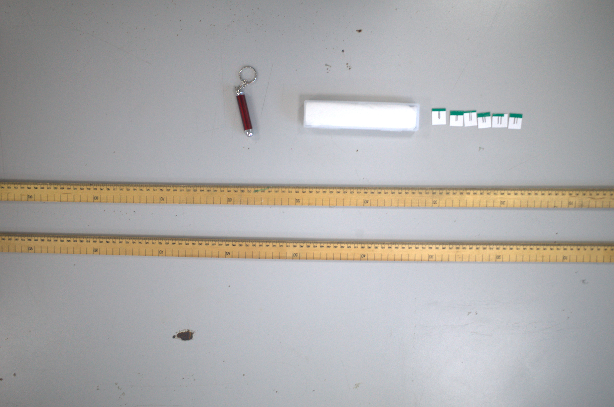
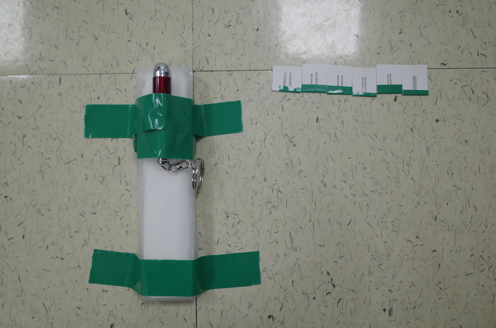
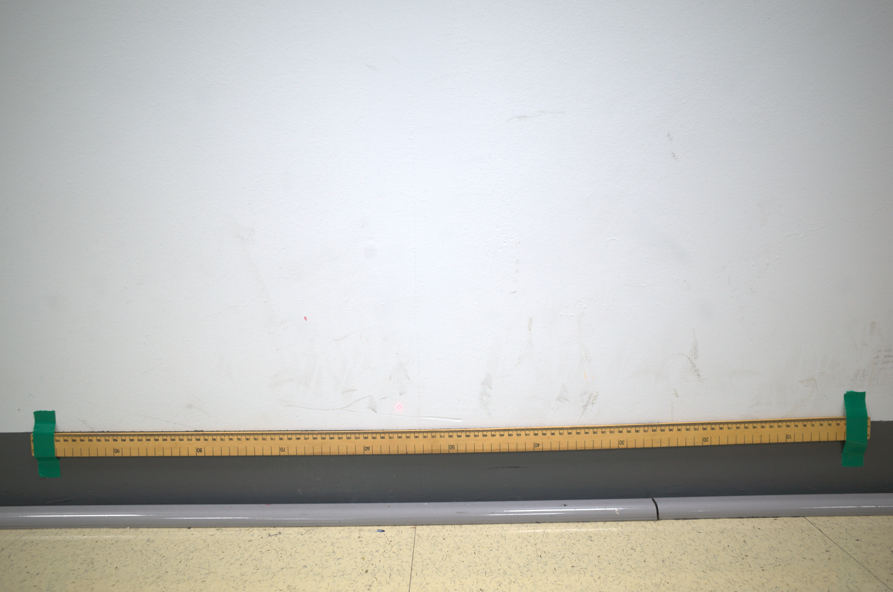

Home | Background | Experiment | Results | Conclusion | Bibliography
|
 The equipment used in the experiment. |
|
| Type | Variable | Detail |
|---|---|---|
| Independent (what we change) | Slit separation (d) | 0.5, 1.0, 1.5, 2.0, 2.5 and 3.0 mm |
| Dependent (what we measure) | Pattern width W (cm) and fringe count n | Total width of the visible fringe pattern measured from printed photographs with a ruler scale; n = number of visible bright fringes counted per photograph |
| Controlled (what we keep the same) | Distance from slits to screen | 2.00 m, fixed with a metre ruler |
| Laser wavelength | Red laser ~650 nm, same device throughout | |
| Lighting | Darkened room for all trials | |
| Laser alignment | Perpendicular to the slit slide each time | |
| Measurement method | Same camera position and ruler scale every time |
|
 The laser and slit slide setup.  The fringe pattern projected onto the wall screen. |
Safety: Never look directly into the laser beam. Secure the laser so it cannot fall or move. |
Home | Background | Experiment | Results | Conclusion | Bibliography